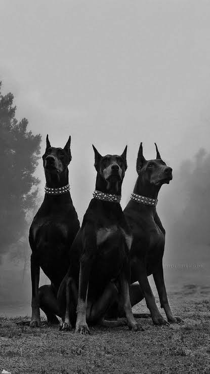
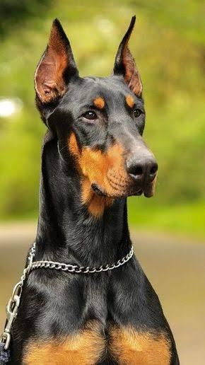

Dobermann é uma raça de cães do grupo pinscher, oriunda da Alemanha. A raça foi desenvolvida inicialmente por Karl Friedrich Louis Dobermann, em Apolda, Alemanha, por volta de 1860. Foi a primeira raça criada especialmente para proteção.

esenvolvida inicialmente por Karl Friedrich Louis Dobermann